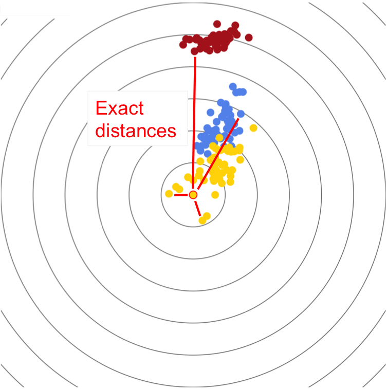
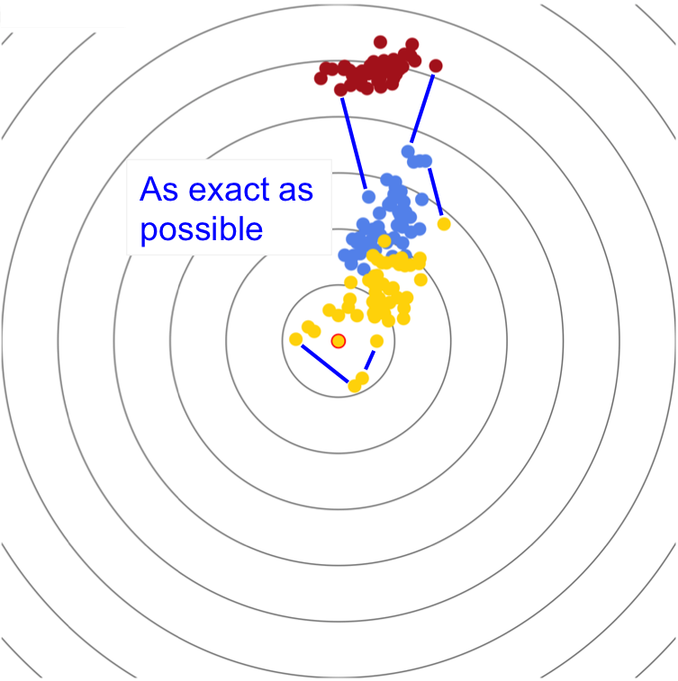
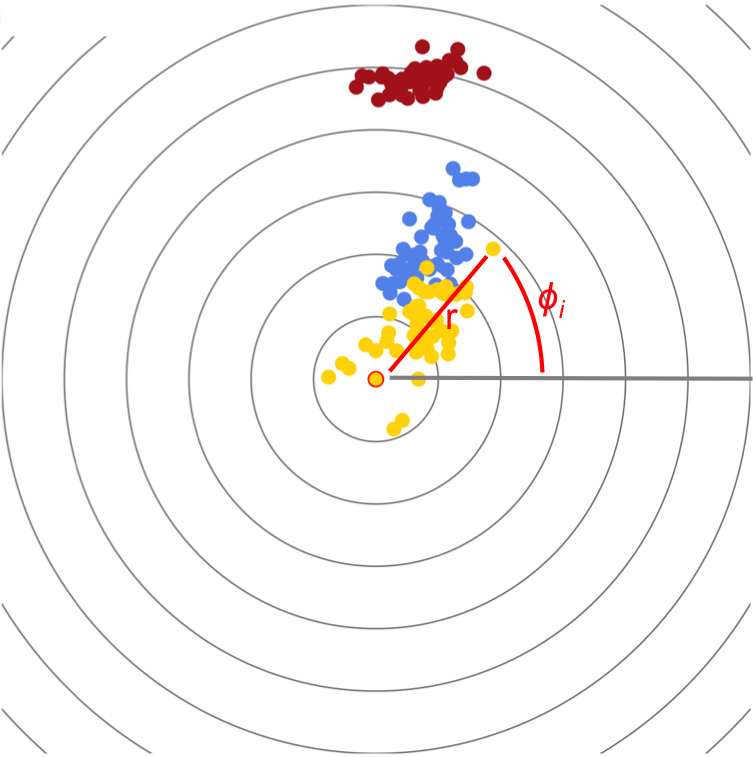
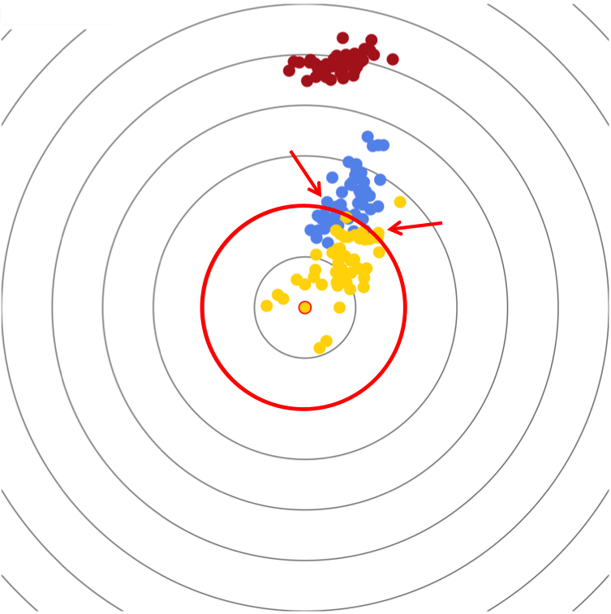

Nov. 2016 / Lea Urpa
Focused multidimensional scaling (focusedMDS) is a tool for visualizing the multidimensional data contained within a data matrix. Visualization is a key tool in understanding real relationships among data within a dataset, and current static tools for visualization of data from distance matrices via multidimensional scaling can be misleading. FocusedMDS better represents the real relationships among data in a distance matrix.
Click me!
In this graph, you can choose a particular data point (the focus), around which all other points are plotted in their exact distances to the focus (as given in the data matrix). The distances of the non-focus points are plotted as close to their ideal distances as possible. This allows you to move the graph to different perspectives, investigating clusters.
 The data are plotted exactly around the focus point and as exactly as possible to each other by plotting in polar coordinates: the r value is taken directly from the data matrix. The phi for each point is iteratively chosen, beginning with the closest to the focus point outward, by minimizing the disparity between the distances from that point to all the others that have already been plotted on the 2D plane (Dij) and their distances given in the distance matrix (dij), a measure called stress (Dij - dij)^2. Since the points are plotted iteratively, the optimal phi is chosen by univariate mathematical optimization.
This gives implications about how the graph is interpreted: those points along a circular grid line are all equally similar to the focus point, but their distances from one another along that circular grid line show their similarity (or dissimilarity) to one another.
For example, in the picture below we can see that there are many versicolor (blue) and virginica (yellow) samples that are equally similar to the focus sample, but that along that arc the virginica samples are distinct from the versicolor samples (with some overlap).
To make the Iris plot, use the following code in Rstudio or R:
library(datasets)
library(focusedMDS)
# Load Edgar Anderson's Iris Data
data("iris")
# Create a table of measures to compare individuals on
table <- iris[ , c("Petal.Length", "Petal.Width", "Sepal.Length", "Sepal.Width")]
# Find euclidean distances between flowers based on these measures
dists <- dist(table)
#Simplest usage: only with dataset input
focusedMDS(dists)
In the simplest case, we specify only the distance object. Colors are chosen from a sequential rainbow and labels are automatically assigned. Note we chose to create the distance matrix using petal length, petal width, sepal length, and sepal width measures and calculated simple euclidean distances between each individual flower. The interesting biological questions come from what individuals you choose to compare, and which measures you include when calculating the distance matrix- the focusedMDS function only requires that the input be either a dist object or a square, symmetric matrix.
Next we will create a vector of color labels based on flower species:
# Create labels based on flower species
colorvector <- as.vector(iris$Species) # making sure to convert factors to characters
colorvector[colorvector == "setosa"] <- "firebrick" # colors must be css colors
colorvector[colorvector == "versicolor"] <- "cornflowerblue"
colorvector[colorvector == "virginica"] <- "gold"
# If you picked a color that isn't CSS, it will show up as black
# Visualization with color labels
focusedMDS(dists, colors = colorvector)
Note that the elements in the colors vector must be in the same order as the the column/row names in the distance matrix- otherwise you'll paint the points the wrong color. If you look in the iris data table, you can see that there are 50 setosa species flowers, then 50 versicolor species flowers, then 50 virginica species flowers, so the order of our colors vector here is correct.
Finally, we will create a vector of labels for the points:
# Create text labels
names <- c( paste( rep("setosa", 50), 1:50, sep = "" ),
paste( rep("versicolor", 50), 1:50, sep = ""),
paste( rep("virginica", 50), 1:50, sep = "")) # Important not to have spaces in name labels
focusedMDS( dists, ids = names, colors = colorvector)
Again, the ids vector must be in the same order as column/row names to label the points correctly. The function also has additional specifications for starting focus point (by convention the first id), fixed size of the plot (in pixels), number of background circles, and tolerance for the optimization function.
Nov. 2016 / Lea Urpa